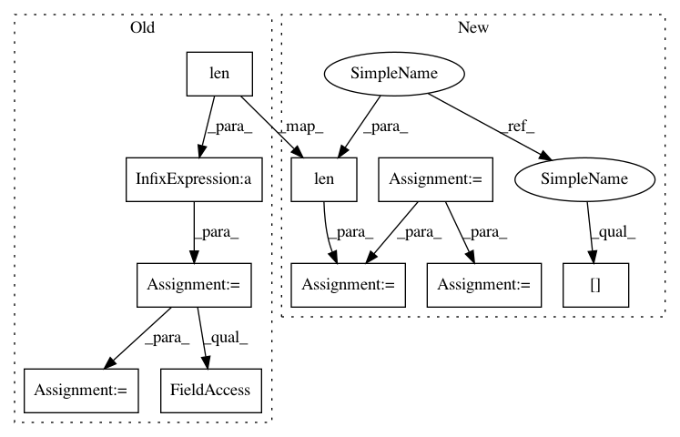

be291b6a6ab8a663beac72fefa213bc7216a1617,geomstats/learning/frechet_mean.py,,_ball_gradient_descent,#Any#Any#Any#Any#Any#Any#,177
Before Change
while convergence > tau and max_iter > iteration:
iteration += 1
grad_tangent = 2 * log(torch.from_numpy(gs.repeat(barycenter, len(points), axis = 0)),
torch.from_numpy(points)) * torch.from_numpy(weights)
grad_tangent = grad_tangent.data.numpy()
cc_barycenter = exp(torch.from_numpy(barycenter),
torch.from_numpy(lr * grad_tangent.sum(0, keepdims=True)))
cc_barycenter = cc_barycenter.data.numpy()
convergence = metric.dist(cc_barycenter, barycenter).max().item()
After Change
//grad_tangent = 2 * log(torch.from_numpy(rep_barycenter), torch.from_numpy(points))
barycenter_gs = gs.squeeze(barycenter)
points_gs = gs.squeeze(points)
grad_tangent = gs.zeros((len(points),len(barycenter_gs),len(points[0][0])))
for j in range(len(points)):
for i in range(len(barycenter_gs)):
grad_tangent[j][i] = 2*metric.log(points_gs[j][0], barycenter_gs[i] )
grad_tangent = grad_tangent * weights
//cc_barycenter_gs = metric.exp(barycenter_gs,
//lr * grad_tangent.sum(0, keepdims=True))
In pattern: SUPERPATTERN
Frequency: 3
Non-data size: 10
Instances
Project Name: geomstats/geomstats
Commit Name: be291b6a6ab8a663beac72fefa213bc7216a1617
Time: 2020-04-07
Author: hadizaatiti@gmail.com
File Name: geomstats/learning/frechet_mean.py
Class Name:
Method Name: _ball_gradient_descent
Project Name: nilearn/nilearn
Commit Name: 07bbcbb72cbfcea9ef10087167163138165c5003
Time: 2015-07-28
Author: elvis.dohmatob@inria.fr
File Name: plot_poldrack_space_net.py
Class Name:
Method Name:
Project Name: nilearn/nilearn
Commit Name: c943318502c17ea9d909e79ce898431282768cb9
Time: 2015-07-28
Author: elvis.dohmatob@inria.fr
File Name: plot_poldrack_space_net.py
Class Name:
Method Name: